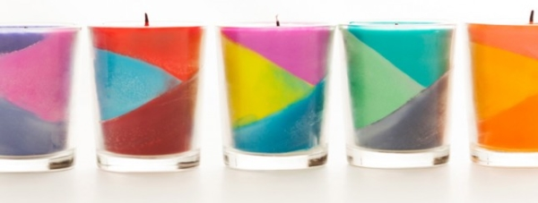
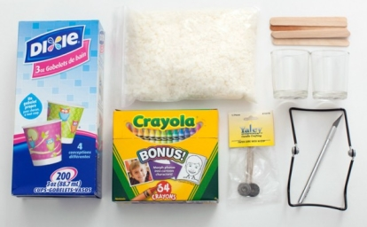
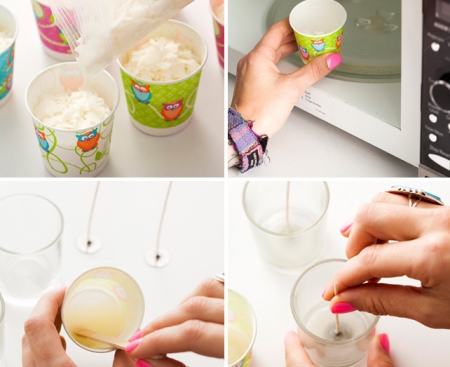
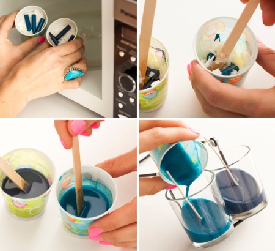
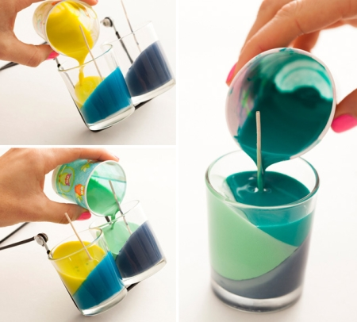

Учимся делать свечи своими руками
За счет добавления в самодельную свечу стружки от цветных восковых карандашей, можно добиться разнообразных цветовых сочетаний и эффектов.

В этом уроке мы расскажем о том, как сделать свечу с разноцветным геометрическим рисунком, но Вы можете поэкспериментировать и попытаться создать свой неповторимый узор. Если Вы хотите, чтобы цвета плавно переходили один в другой, просто заливайте следующий слой, не дожидаясь, пока первый высохнет.
Вам потребуются:
- маленькие стеклянные стаканчики (из прозрачного или матового стекла), а также посуда, в которой Вы будете разогревать воск (подойдут и бумажные стаканчики для мороженого);
- воск;
- восковые карандаши;
- фитиль;
- деревянные палочки для размешивания.

-
Наполните стаканчик воском и поставьте его в микроволновку на 1 минуту. Капните горячим воском на дно стеклянного стакана и закрепите в нем фитиль. Дождитесь, пока он застынет.

-
Подготовьте восковые карандаши: для этого снимите бумагу и нарежьте их на мелкие кусочки. Наполните один из стаканчиков воском, сверху положите кусочки карандаша (одного цвета!) и поставьте в микроволновку на 2 минуты, затем перемешайте, чтобы получилась однородная масса.

-
Возьмите стеклянные стаканчики, наклоните их под углом примерно 300 (можно использовать сушилку для посуды в качестве опоры) и залейте цветным воском (примерно на 1/3). Оставьте на 20-30 минут, пока воск не затвердеет. Переверните баночки и залейте второй слой, затем снова дождитесь, пока он застынет. Перед тем, как заливать последний слой, поставьте баночки вертикально на стол. Прежде, чем зажигать свечу, подождите примерно час, пока она полностью не остынет.
